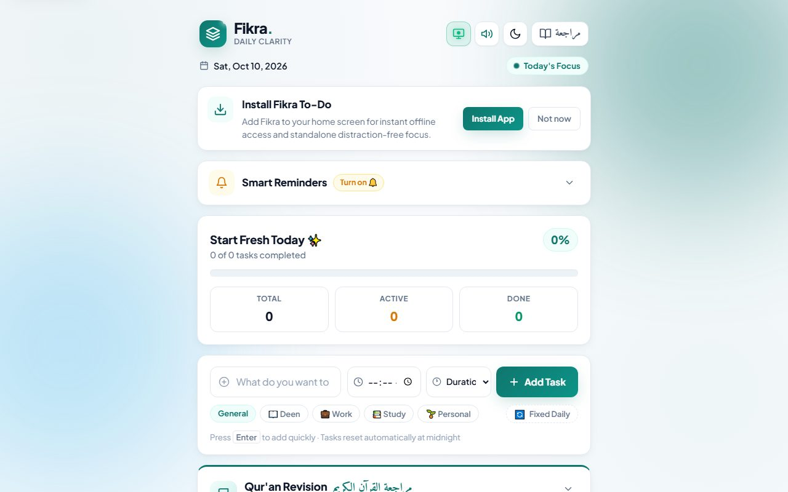
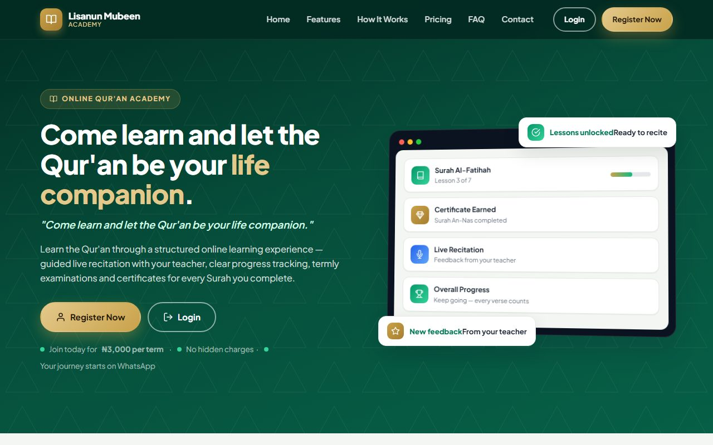
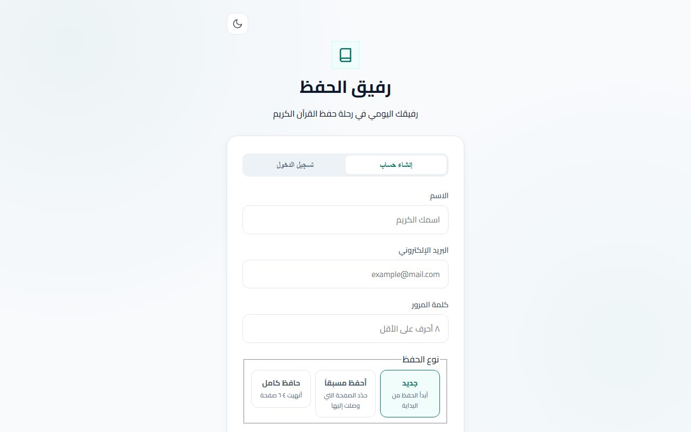

Frontend engineering
Applied on live projects.
Hello, I’m
Yunus Zakari Abdulhameed
I build, improve and maintain web applications. I work comfortably in existing codebases — investigating bugs, implementing features and picking up whatever a project needs.
Open to remote opportunities. Available for freelance work and collaboration.
About
I’m a software developer focused on web applications and frontend engineering. My work centres on solving real problems: building features, tracking down bugs, improving how an application feels to use, and keeping the code maintainable.
I’ve shipped a bilingual daily task app, an educational platform with a PHP and MySQL backend, and a Qur’an memorization logbook. Each project pushed me to work with data, structure code clearly, and make interfaces hold up on small screens.
I’m comfortable stepping into an unfamiliar codebase, reading how it fits together and making changes without breaking what already works. I use Git for collaboration, learn whatever technology a project requires, and value clear communication with the people I work with.
I’m open to remote roles, freelance projects and collaboration.
Skills
Grouped honestly: what I use on live projects today, and what I’m actively building toward. No inflated claims or invented expertise.
Applied on live projects.
Applied on live projects.
In progress, not expert-level yet.
Everyday tooling for modern developers, still deepening.
Featured applications
Live applications you can open and explore. Each one is running, so you can see how it actually behaves instead of relying on a written description.

01
A daily to-do app built to solve a small but real problem: a task list that stays clean without manual resets. Tasks persist between visits and reset automatically at midnight, with optional smart reminders, Deen/Work/Study/Personal categories and a Qur’an revision tracker across the 604-page Mushaf. Arabic and English are both supported, and it installs as an offline progressive web app with a service worker and web app manifest.

02
An educational platform built with PHP and MySQL. The codebase covers student registration, an admin area, exam results and certificates, and documents Quran memorization features that are still in development. I wrote the backend and front-end and deploy and maintain the site on shared hosting. Parts of the platform are still being built.

03
A Quran memorization daily logbook: a PHP 8 and MySQL backend with a right-to-left web interface and a mobile PWA wrapper. It includes recitation page cards with swipe navigation and flashcard practice, and the repository documents the local setup steps.
Experience & contributions
I take the featured applications from idea to deployment — interface, and in two cases the PHP/MySQL backend as well. That covers planning features, implementing them, testing on real devices, fixing bugs and getting the result live on hosting.
Beyond my own projects, I contribute to open-source codebases — over 100 of my pull requests have been reviewed and merged. A few examples:
Alongside software work, I’ve taken on teaching and school leadership responsibilities. That background sharpened the communication, organisation and reliability I now bring to working with teams and clients.
Certifications & professional development
AIMKIO SOLUTIONS LTD
Awarded 3 November 2025
Training covered HTML, CSS, JavaScript, Git, responsive web design, UI/UX fundamentals and modern frontend frameworks. This is a professional training certificate, not a university degree.
Services
I can build something new or step into an existing codebase to fix, extend and improve it. I’m upfront about what I deliver today and what I’m still learning, and I pick up a project’s stack as I go.
Multi-page sites and web applications that work cleanly from small phones to wide desktops.
HTML5 · CSS3 · JavaScript
Turning a Figma file, mockup or other design reference into clean, semantic HTML, CSS and JavaScript.
Figma · HTML · CSS · JavaScript
Server-side logic, form handling and connecting an interface to external APIs and services.
PHP · REST APIs
Storing, querying and displaying real data with SQL-backed features and admin areas.
MySQL · SQL
A clear, professional online presence for businesses, schools and individuals — including school management systems.
HTML · CSS · PHP · MySQL
Improving an application you already have: faster loading, cleaner layouts, fixed bugs and ongoing upkeep.
Debugging · Performance · Maintenance
Version control, working inside shared codebases, and getting a project live on hosting.
Git · GitHub · Deployment
Installable, offline-capable web apps where they add genuine value to a project.
Service workers · Offline · Installable
Building component-based interfaces with React and utility-first CSS frameworks.
React · Tailwind CSS · Bootstrap
Server-side JavaScript and REST APIs while I grow my Node.js skills.
Node.js · Express
Adding AI-assisted features by integrating third-party AI APIs into an application.
Third-party AI APIs
Have something in mind? Tell me about the project and I’ll reply with the next steps.
Contact
The fastest way to reach me is email or WhatsApp. I read everything and reply as soon as I can.
For project enquiries and job opportunities.
For a quick conversation.
GitHub
yunus-dev-codecrafter (opens in a new tab)Contributor activity and open-source work.
CV
Available on request
Email or message me and I’ll send my CV.